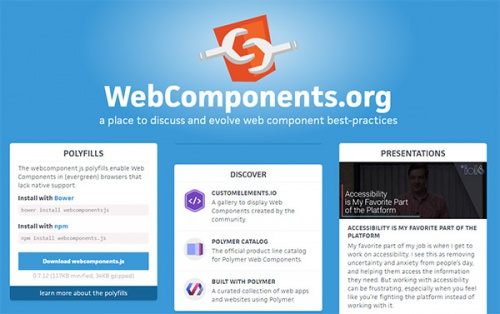

Современные вэб-технологии
Я хочу поделиться популярными веб технологиями. Они не являются обязательными. Но в то же время помогут ускорить работу и улучшить качество кода.
Web Components

Это новый стиль элементов для HTML5, который базируется на стандартах W3C. Компоненты позволяют создавать пользовательские элементы многократного использования для структур динамических страниц, таких как виджеты с вкладками, слайдеры изображений и выпадающие меню. Вместо того чтобы создавать всплывающее меню с маркированным списком, можно использовать тег
На официальном сайте Web Components доступно множество практических примеров, но очень мало пояснений того, где они могут пригодиться.
На данный момент еще слишком рано использовать Web Components в реальных проектах. Но через несколько лет все может измениться. Вот почему я считаю, что все веб-разработчики должны ознакомиться с этой современной веб технологией.
Polymer
Когда вы познакомитесь с Web Components, вам может понадобиться библиотека Polymer. Этот проект с открытым исходным кодом запустил Google. Он предназначен для создания стандартизированных веб-компонентов.
Эта библиотека упрощает разработку, если вы работаете с Web Components API. С ее помощью вы получите встроенные элементы для добавления таких функций, как видео, слайдеры и даже виджеты Google Maps.
Целью Polymer является создание модульной структуры. Вот почему она позволяет создавать собственные виджеты на основе Web Components API. Таким образом появляется возможность добавить несколько виджетов на одну страницу без повторной записи кода.
Библиотека Polymer неразрывно связана с Web Components, и две эти технологии значительно изменяют методы модульной разработки сайтов.
AMP

Google всегда пытается улучшить интернет. Проект Accelerated Mobile Pages (сокращенно AMP) позволяет адаптировать любую веб-страницу для мобильных устройств по стандартному шаблону.
Нужно просто добавить небольшой код на свою страницу и позволить Google сделать все остальное. Если ваш сайт AMP-оптимизирован, он будет загружаться быстрее. Таким образом, сайт будет больше похож на оригинальное приложение.
Учитывая стремительный рост количества пользователей мобильных устройств, это технология веб разработки, на которую стоит обратить внимание. Она не подходит для интерактивных сайтов, но для блогов и новостных ресурсов технология AMP может стать революционным решением.
Three.js
Если вы следите за тенденциями WebGL и 2D / 3D веб-графики, то должны знать о Three.js. Это самый мощный движок рендеринга на основе JS, который можно использовать для веб-графики.
Немногим сайтам нужна 2D или 3D графика. Но количество таких сайтов увеличивается, и это одна из лучших JavaScript-библиотек, которые можно использовать для создания элементов холста и диаграмм данных.
Лучшее в Three.js это то, что данная библиотека является бесплатным инструментом с открытым исходным кодом, поэтому она постоянно совершенствуется вместе с WebGL API.